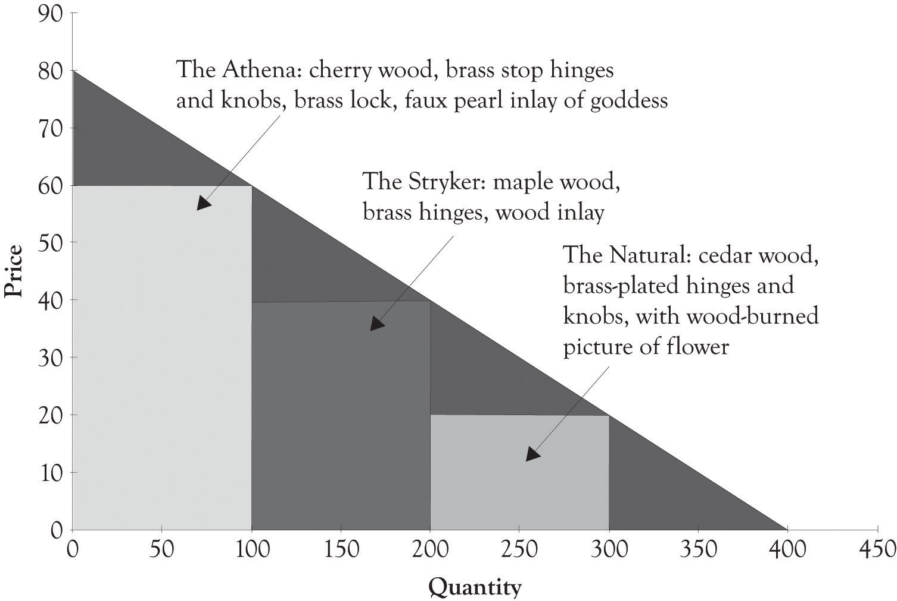
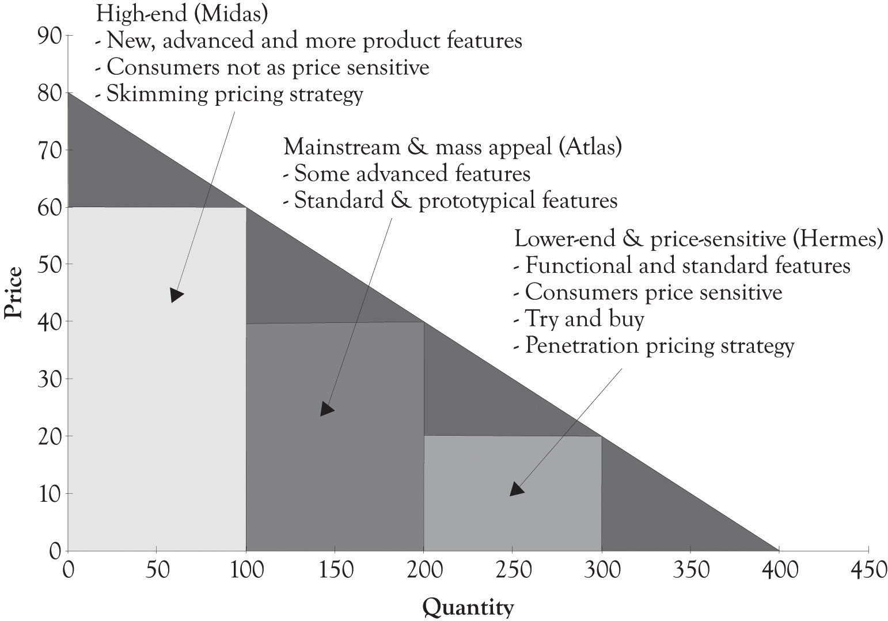

The demand for a product is influenced by a number of factors including product availability, the utility or usefulness of a product, consumer income levels, product features, marketing efforts, product awareness, the quality and performance of substitute products, fashion and the cost of complementary products. This chapter illustrates how product differentiation curves (PD curves)Illustrates the relationship between price and the quantity demanded. It can include different versions of a product on the curve and also segments each product version according to the willingness-to-pay characteristics of buyer groups. can be used to increase revenues and continually deliver updated products and services. We will sometimes refer to PD curves as versioning curves. The focus will not be on the math or even on the actual form of the demand curve. Our focus will be on using product differentiation or versioning curves as a conceptual tool for developing different product versions.
A PD curve is very useful in illustrating the relationship between price and the quantity demanded. But there is one major difference between the PD curve and the typical demand curve. The PD curve can include different versions of a product on the curve and also segments each product version according to willingness-to-pay characteristics of the buyer groups as illustrated in the case of Joan’s jewelry (see Figure 4.1 "Product Differentiation or Versions Curve for Joan's Jewelry"). These major groups are Midas, Atlas, and Hermes consumers. The primary purpose of the PD curve is to assist in identifying product versions and prices levels for discriminating each product version. The process for matching products to the willingness-to-pay segments is rooted in experimentation and the continuous introduction of new versions of products and services.
The PD curve is very useful for product positioning. Product positioning is the process where sellers and producers try to create an image, an identity, or an emotion toward a product or a service in the minds of consumers. This is the essence of the brand concept. A brand is simply something that lives in the head of consumers.Adamson (2006). The brand is a composite of the mental associations that are generated when you see or think about a certain product. Our focus will be on positioning products and services according to the different customer segments’ willingness-to-pay and price sensitivities. The PD curve can of course be used to illustrate how a single standardized product can be differentiated by geography, by market segment, and through branding efforts.
Figure 4.1 Product Differentiation or Versions Curve for Joan's Jewelry
One promising application of the PD curve is that it can be used to identify the so-called Blue Ocean markets. A Blue Ocean market is a market that does not exist. The goal is to create a new product that is radically differentiated from existing products that are being offered and to create the Blue Ocean market.Kim and Mauborgne (2005). A related concept in the marketing literature, called lateral marketing, was developed by Kotler and de Bes (2003).
The idea behind versioning is to engage in differential pricing by offering different types or editions of a product.Shapiro and Varian (1998). Ideally, the different versions should be perceived as having different levels of quality. The number of versions can also be related to the number of distinct market segments. In many instances, it is difficult to identify the optimum number of market segments, and it is also difficult to develop products for each market segment. Goldilocks pricing, and therefore versioning, is a rule of thumb that suggests that you should start out with three price levels.Shapiro and Varian (1998). The idea behind Goldilocks pricing is that offering 1 product is too few, 10 products is too many, and offering 3 differentiated products is just the right amount. A case was made in the chapter discussing Joan’s jewelry boxes for having more than one product because of the increased potential for generating revenue for Joan.
If a company does not introduce multiple versions of a product, they will be leaving money on the table. If a company does not have a high-end product for consumers who are affluent or price-insensitive, then they will not have extracted the consumer’s surplus from affluent customers or customers who simply do not care how much the product costs, they just want it. On the other hand, a business will also leave money on the table if they do not have a lower-end product for price-sensitive individuals because price-sensitive individuals will not purchase products that are above their willingness-to-pay. Price-sensitive customers, such as students, also present another opportunity; they can be the foundation for establishing a long-lasting relationship when they have more discretionary income.
There is one additional reason for offering more than one product to consumers. Introducing multiple versions of a product permits a company to experiment and observe consumer’s economic behavior in action. The company can monitor purchase behavior and determine which features and products consumers deem most desirable. Such experimentation is actually the most effective activity for conducting research and engaging in new product development.
In their book on developing creative approaches for solving problems, Barry Nalebuff and Ian Ayres describe the “What Would Croesus Do?” approach.Nalebuff and Ayres (2003), also see Why not? About the book. Also visit Wikipedia. The gist of the approach is to consider how a consumer would solve a problem when he or she has unlimited resources. Need tech support, have the tech sit outside your office, and enter when called. Bored, become a cosmonaut. This approach can help to identify high-end products and services for the consumer who is not price-sensitive and is interested in many different features (see Figure 4.2 "Dynamic Tension Between Midas and Hermes Leads to Atlas Products"). We have renamed Croesus to Midas products because it is easier to remember and because it imparts a very colorful and explicit image of high-end features. Midas products and services are designed for consumers who are not price-sensitive and demand high-end features. Products that are designed with high-end features for individuals who are affluent or individuals who are simply interested in high-end products are designed using extravagant engineering. Extravagant engineering is less concerned with costs and more concerned with using new technology and concepts to develop innovative and perhaps even radical products and services. In general, products and services that are extravagantly engineered contain advanced features and attributes.
Figure 4.2 Dynamic Tension Between Midas and Hermes Leads to Atlas Products

Pricing high-end Midas products and services is tricky and very important. The goal is not only to cover variable costs but also to make a profit. There is more at stake with Midas products. Another objective is to get consumers to focus on the attributes of a Midas product that distinguish it from other products. The point is to determine what product features customers value the most. This is accomplished partly by marketing research but also through economic experiments in the form of introducing products with different features and observing buying behavior. Bertini and Wathieu have identified several strategies that can stop consumers from fixating on price and focus on product features.Bertini and Wathieu (2010). One noteworthy approach is to willfully overprice the product in order to stimulate curiosity. It appears that some consumers are more inclined to analyze product features and even buy a product when there is a high price premium in the 30–80% range.
There is a part of the demand curve where the consumers are price-sensitive. This segment could include students, seniors, and, in general, individuals with low levels of discretionary income or individuals who are truly value-conscious. In designing products and services for this group, you can use the “What would Hermes Do?” approach. Hermes was the god of the traveler, the shepherd, the athlete, the merchants, the cunning, and was linked to invention and commerce. We are now designating Hermes as the patron for the part of the demand curve that does not have a patron.I realize that there are many patrons for this large segment of humanity. The goal is to have a question for the bottom of the pyramid. Please see Prahalad (2006) and many others who have been committed to this group. Hermes products and services are designed for consumers who are price-sensitive and demand features that are functional for the task at hand. Hermes products and services are still functional, but they have reduced and scaled-back features. There are a variety of very interesting products and services that have been developed for Hermes customers occupying the price-sensitive end of the demand curve. An important reason for offering Hermes products and services is to acquire customers who might eventually become Midas consumers. For example, students become less price-sensitive as they enter the work force and generate more discretionary income. Consumers’ tastes can also change as they become more familiar with a product line or because they get caught up in the hype around fashionable product. Designing Hermes products requires skills in frugal engineering.
Frugal engineering is the ability to design useful low-cost products and services for price-sensitive consumers.Athreye and Kapur (2009). Frugal engineering is the clean slate approach for engineering and designing products and services. The first step is to identify the fundamental or essential functions of a product or service. The next step is to concurrently design or redesign the existing product or service and the manufacturing process so that the process is very efficient and the components and materials used are inexpensive. The individuals using Hermes products can be price-sensitive because they are thrifty, but they can also be Hermes customers because they are part of the approximately 4 billion people in the world with a purchasing power of $1,500 per year or consumers who are looking for a bargain.
Midas and Hermes products have an important role in developing new ideas for products and services for the middle of the demand curve. Midas gives product developers the license to create ideas that are unique and perhaps superfluous. Hermes products and services establish a minimal baseline for a product or service with the additional prompting of being inexpensive to produce. Hermes products should be less expensive to produce because they are meant to attract price-sensitive customers.
From the producer’s perspective, the idea is to get the creative juices flowing and use the top and bottom of the demand curve to generate new ideas for products and services by drawing on both extravagant and frugal engineering approaches to develop Atlas products. The mass-appeal or mainstream products in the middle are called Atlas products. Atlas was a Greek mythological figure that supported the weight of the heavens on his shoulders. Atlas products support the broad-based customer segment in the middle that requires products that have standard features and also have slightly differentiated features to meet the demand of monopolistic competition. The point is to create dynamic tension between the two ends of the demand curve, anchored by extravagantly engineered and designed Midas products and frugally engineered and designed Hermes products. The result of this dynamic tension is an Atlas product.Dynamic Tension was an exercise approach developed by Charles Atlas, but it also works here. This is a product with attractive features and with an attractive contribution margin. The result is also a robust process for continually inventing and reinventing the products and services to stave off the competition and establish a strong foundation for survival.
The three categories for product versioning and experimentation are the high-end or Midas product, the mass-appeal or Atlas product, and the low-end or Hermes product (see Figure 4.3 "Midas, Atlas, and Hermes Characteristics"). We will often use the terms version and product interchangeably; however, a version is usually related to a particular product. The Midas product is targeted toward the consumer who is not price-sensitive and is interested in many different features. Midas products might have an extended warranty or may be bundled with other products and services. Examples of Midas products include Cadillac, Acura, Lexus, TurboTax Premier, and specialized boutique stores. Sometimes, a Midas version is not even different than the Atlas version of a product or even the Hermes version of a product. Marketing efforts via branding may have infused the notion that the product is better than another product with the same features. This happens in the commodities markets, the car-rental business, and in electronics markets where standardized products such as CDs and DVDs are being sold.
Figure 4.3 Midas, Atlas, and Hermes Characteristics
Mass-appeal or Atlas products and services are developed to appeal to a large percentage of consumers. Mass-appeal products and services will contain elements of what is essentially a prototypical product. A prototypical productThe archetype product that other products are patterned after. is the archetype product that other products are patterned after. In order for this product to appeal to the masses, it usually has a minimal set of standard features. In order to distinguish a prototypical product from the competition, there will also be a few features that are differentiators or there will be standard features that have been enhanced or amped up a bit to discern the product from other mass-appeal products. Examples of mass-appeal products include the Camry, the Accord, the Malibu, and TurboTax Deluxe. Examples of mass-appeal retail outlets include Sears, Safeway, and Amazon.
Low-end or Hermes products and services are designed for markets where the consumers are price-sensitive. These products have the essence of the prototypical product, but they are scaled back in order to meet the price sensitivities of this segment. These groups could include students, seniors, and, in general, individuals with low levels of discretionary income or even individuals who are value-conscious. Examples of products and services designed for the Hermes customers include TurboTax Free Edition, the Honda Fit and Tata Nano, and many of the large lot stores such as Sam’s Club, BJ’s, and Costco. Figure 4.4 "TurboTax Versioning" presents the all-to-familiar price and product versioning that is used by Intuit for TurboTax.
Figure 4.4 TurboTax Versioning

Low-end, low-cost products and services are of emerging importance because of the huge market at the so-called bottom of or base of the pyramid (BoP).Prahalad (2006). Price and product differentiation can benefit the 4 billion people who need pharmaceuticals, health care, personal grooming, and low-priced durable goods and electronics. In the past, many businesses have ignored this substantial collection of individuals. But there is money to be made at the BoP because there is demand for inexpensive products by these consumers. Price-sensitive consumers have many of the same wants and desires as the affluent consumers.See the discussion at the end of this chapter on Pareto Economics, Welfare, and Efficiency. They just have to spend more money on the basic necessities of life and have little discretionary income. Products can actually be designed at the high end and the mass appeal levels, and then scaled back so that they can be sold to individuals at the BoP. As noted above, price-sensitive customers can be the foundation for establishing a long-lasting monetary relationship when those customers attain more discretionary income. Here are a few additional examples of versioning approaches. The next chapter will provide many more examples of how versioning has been used by various businesses.
Competition in the restaurant, hotel, bars, and motel businesses is fiercely monopolistically competitive. Typically, these businesses compete on atmosphere, the level of service, and the uniqueness of their offerings. A Midas high-end hotel can have boutique rooms, spas and fitness rooms, and a vast array of food choices from room service to expensive high-end dining. In contrast, the Hermes hotel can be clean, Spartan, and in close proximity to fast food and casual dining outlets. The drama is in the details. Fresh flowers in the room, a free breakfast, and free cookies can attract customers. In most instances, the benefits of a given differentiation strategy are transitory, and new features have to be added or existing features need to be refreshed in order to compete effectively. Figure 4.5 "PD Curve for Restaurants" illustrates a PD curve for fast food, casual dining, and fine dining restaurants.
Figure 4.5 PD Curve for Restaurants
Figure 4.6 Differentiating a Standard or Similar Product

Standardized and commodity products can also be versioned. Sometimes, the high-end product is not even that different from the mass-appeal product or even the low-end product. Marketing efforts via branding may have instilled the notion that the product is better than another product with the same features. As illustrated in Figure 4.6 "Differentiating a Standard or Similar Product", the way to sell a standardized product to the high end is to have a distinct brand, offer extended warranties, deliver products and services faster, or all three. This happens in the auto business, commodities markets, and the entertainment industries. There are also ways to sell a standardized product to the low end without upsetting individuals who purchased a product at a higher price. This can be accomplished by offering customer rewards programs, having customers use coupons, and delaying the shipment of a product. If you buy months ahead from the airlines, you can sometimes get a better price than an individual who buys ticket days before departure. Rebates are also a way to sell at a lower price for standardized product. The product is not the same because of the hassle of filling out the documentation and the uncertainty that comes from not knowing whether the rebate or coupon will be honored.
There is no superset of features that can be used for product and service differentiation because demand is subject to the development of new technologies, changing wants, the social context, culture mores, and the fickleness of fashion. Here is a subset of the attributes of products and services that can be modified:
As you can see from the above list, and from the chapter, there are numerous strategies for versioning. Some of them require significant product and development and research and development (R&D), and others require modest investments and change in a product or service. Some of them require repositioning of the product through marketing and promotion efforts. The FAD (features, attributes, and design) template, which is introduced in Chapter 7 "Conceptualizing Products/Services Using FAD", is very useful for identifying features and attributes that can be used to version products and services for Midas, Atlas, and Hermes customers.
Many companies start by introducing and designing the mass-appeal or Atlas product first. The objective is to get the product out the door and generate as much revenue as possible by setting the price and developing the features in such a way that profit and cash flows are near the optimum level. That was the strategy used by Joan’s jewelry. She then introduced a high-end Midas version to attract affluent consumers. This is sometimes followed by introducing a scaled-back Hermes version with easy-to-produce features after the production process has been fine-tuned. Some businesses introduce a low-end Hermes product at the same time that the Atlas and Midas versions are introduced. Their objective is to use the low-end version to attract buyers to the mass-appeal and high-end products. Sometimes, a version is given away or is offered on a try-and-buy basis. This is referred to as a freemium version.
The key consideration is to design products and services so that features can be easily added and subtracted and new versions can be quickly introduced. This of course implies that the producer will use modular design approaches and agile production processes in product development.
A customer segmentA group of prospective consumers with similar products and services. is a group of prospective consumers with similar products and services. Potential segments can be based on age, gender, income, family structure, affluence, city size, location within a country and around the world, interests, life style, behavior, psychological characteristics, culture, and product function. Segmentation is also found in business-to-business relationships. Businesses can be segmented by product and service needs, business function, and industry, location within a country and around the world, culture, and by the size of business.
The goal of segmentationTo target and sell to consumer groups that have similar characteristics and demand habits. is to target and sell to consumer groups that have similar characteristics and demand habits. Segmentation can be useful in describing the target market, but it should be used sparingly. Potential customers can be a member of many segments. There is a tendency toward oversegmentation. There are three key criteria available for developing and using a customer segment. The first question relates to whether the customer segment is easily identified and whether the customer segment make sense? The second question is related to the first and asks if the individuals in the customer segment are relatively homogeneous? The third question relates to being able to target and reach those customers in the segment. Can the organization effectively use advertising and promotion to target those customers in the customer segment?
Segmentation and grouping are typically based on age, gender, income, family structure, affluence, city size, interests, life style, behavior, psychological characteristics, culture, and product function. However, many businesses and marketers use more detailed and descriptive words to describe their customer segments. Here are a few of the many words that can be used to describe customers segments:
Traditionalists, Conventionalist, Survivalist, Easterners, Westerners, Northerners, Yankees, Southerners, Pioneers, Enthusiasts, Gamers, Minimalists, Organics, Granolas, Back-to-Naturists, Adventure Seekers, Risk takers, Romanticists, Aficionados, Connoisseurs, Fast trackers, Soccer Moms, Techies, Umbrella/Helicopter parents, Seniors, Oldsters, Middle Agers, Middle age crises and cruisers, Teens, Goths, Hip, Impulsive, Tweeners, Generation X, Millennials, Baby Boomers, Hippies, Yuppies …
It is interesting to note that many of the customer segments are related to the meaning that consumers attach to products and services. Additional discussion of the importance of the meaning underlying a product or service will be presented in Chapter 7 "Conceptualizing Products/Services Using FAD". The best use of segmentation is to provide additional insight and to describe in greater detail the consumers who will be buying the Midas, Atlas, and Hermes versions.
Usually, a product or service is targeted toward a particular customer segment. For example, suppose a company wanted to develop a global positioning system for Adventure Seekers and Risk Takers. After they identified the customer segment, they would then develop two or three versions (Midas, Atlas, or Hermes) of the product that were linked to price sensitivities. Here is another example. Suppose a company wanted to develop high-end head phones for listening to MP3 songs using a new speaker technology. They could target both the Tweeners and the Baby Boomers with different versions and marketing campaigns. They could also develop three versions (Midas, Atlas, or Hermes) of the product for Baby Boomers according to their price sensitivities as well as three versions of the product for Tweeners. Usually, but not always, businesses identify the customer segment or segments first. They then engage in versioning to obtain more revenues and to assist in identifying the product features that are attractive and in demand. The bottom line is that versioning complements and assists in the customer segmentation. Here is a summary of how customer segments fit into product development:
This is of course not a linear process. For example, step 1 and step 2 often occur at the same time. It is similar to the creative problem-solving process discussed in Chapter 6 "Facilitating Creativity and Innovation". There are periods where product developers are engaged in leaning-about customers, emerging technologies, and other products offered in the marketplace. There are also periods of learning-by-doing, where prototypes are built and scrutinized, and where the feedback is obtained from relevant parties. It is, however, a never-ending process of refinement and experimentation.
Pricing plays a key role in developing and formulating a market strategy. The use of PD curves in developing products and services incorporates several important pricing and product strategies.Jain (2000). Modern businesses often turn to product-line pricing strategy to offer a number of products with differences in quality, design, size, and style in order to maximize profits. The product portfolio can include products that are complementary and even products that compete with each other.
The use of PD curves is also in line with the two major pricing strategies for marketing new products: skimming pricing and penetration pricing. Skimming pricingA strategy of entering the market with a high initial price to attract the high end of the demand curve, where price elasticity is low. is used to tap into the so-called “cream of the market.” It is an attempt to attract the high end of the demand curve where price elasticity is low. That is, the customers are not price-sensitive. The objective of using this strategy is to facilitate profitability with a slowly maturing innovative product, covering the high cost of R&D. In many instances, marketers introduce the high end first and then go for the mass market by lowering prices. Penetration pricingA strategy of entering the market with a low initial price to capture a large share of the marketplace. is a strategy of entering the market with a low initial price in order to capture a large share of the marketplace. One objective of this strategy is to tap into the demand curve where the price elasticity is high and customers are price-sensitive. It is used to lure customers, get at a large mass Atlas market, discourage competition, and build economies of scale.Shapiro and Varian (1998).
Singapore Airlines (SIA) is a prime example of a business that uses dynamic tension to deliver high-end, innovative, differentiated services and still be efficient and cost-effective. SIA has garnered numerous awards for their world-class service in their coach, business, and first class offerings.Heracleous and Wirtz (2010). The rest of the story is that they have one of the lowest cost structures compared with any other airline at just under 5 cent per kilometer per seat. Here is an overview of how Heracleous and Wirtz describe SIA’s strategy for delivering world-class services and still being a cost leader.
They keep their fleet young and up-to-date. Their planes are much younger than most of the competition. This translates to fewer mechanical failures, more air time, lower fuel costs, reduced maintenance costs, and happy customers. Salaries are linked to SIA’s profitability. SIA provides twice as much training to their 14,500 employees than the industry average. They also recruit top-notch university graduates. SIA realizes that their employees are the critical touch point with their customers. SIA also realizes that their employees can be the first line of defense in cutting costs. SIA holds town hall meetings where senior executives stress the importance of reducing costs in order to remain competitive. SIA also staffs most of their flights with more cabin crew members than the industry standard. SIA encourages their employees to find ways to reduce costs. For example, cabin crew recommended carrying less food for late night flights and they stopped putting jam jars on every breakfast tray because some passengers did not use them. SIA’s back-office costs lag behind that of their competitors and its sales and administration costs are low and lean.
The secret sauce of SIA’s success includes harnessing the power of its employees, using technology effectively and appropriately, and pursuing the dual strategies of creative differentiation and reducing costs. SIA understands that long-term success is a function of balancing the dynamic tension between delivering high-end Midas services with the Hermes cost reductions.
In this chapter, we have illustrated a model for constructing PD curves that draws on the dynamic tension that exists between developing Midas and Hermes products. The key points are the following:
As noted earlier, we believe that using a combination of pricing and product-versioning strategies facilitates product experimentation and the ability to observe economic behavior in action and perform research and product development. It allows the company to monitor purchase behavior and determine which features and products consumers deem most desirable. The next chapter will introduce a variety of product differentiation versioning strategies that are being used by businesses to compete.
Price discrimination and product differentiation leads to more efficient markets. Many contemporary discussions of economics begin by addressing the issue of the so-called Pareto efficiency or optimality. Vilfredo Federicao Damaso Pareto was an Italian intellectual during the later part of the 19th century and early part of the 20th century. A Pareto optimal distribution of a bundle of goodsA distribution where all parties agree that the allocation cannot be improved upon without hurting at least one other party. is one where all parties agree that the allocation cannot be improved upon without hurting at least one other party. It does not mean that everyone is happy with the distribution; it just means you cannot improve on the distribution without creating a disadvantage for one of the groups or parties. I like to use the word Pareto OK rather than Pareto optimal. A Pareto OK distribution of goodsA distribution of goods is equitable and the welfare of all is optimal given a distribution of incomes and consumer wants. takes into account the idea the distribution of goods is equitable and the welfare of all is optimal given a distribution of incomes and consumer wants. A Pareto OK distribution is also more in tune with Pareto’s original conceptualization of optimality and welfare economics. The so-called Paretian welfare economics is built on three principles:Sugden (1984).
These three principles can be distilled into a single maxim: “as far as social choice is concerned, all that matters is the satisfaction of wants” (Robert Sugden, p. 507).
One goal of developing multiple products and using a product and price differentiation strategy is to deliver products that satisfy wants. Economists are always worried about economic efficiency and societal welfare. The natural questions related to price differentiation is whether this leads to efficient markets and whether society is better off. I propose the following definition of market efficiency:
A market tends to be efficient when the market participants have complete knowledge about the prices and features of products and services offered in the market.
This definition is somewhat different than the traditional definition because it incorporates the idea that market participants are knowledgeable about prices and that they are also knowledgeable about the features of a product. Efficient markets emerge when information is freely available. Dynamic and adaptive markets emerge when there are a variety of products and services available and market participants have the tools available to gather information on the products and services. Search engines and auctions are extremely effective tools for gathering information and developing knowledge about pricing and features and that is why the Internet has been such a powerful force for facilitating efficient markets.